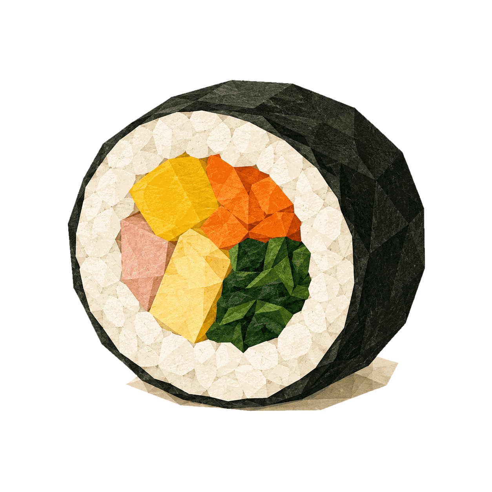

Hangul Sori
SORI CHECK #01
KANNST DU DAS ERRATEN?
ㄱㅂ
Was heißt „koreanische Reisrolle“?
A
김밥
B
고백
C
가방
RICHTIG!
김밥
Gimbap

A, B oder C?
Schreib deine Antwort in die Kommentare.
@hangulsori_learnkorean